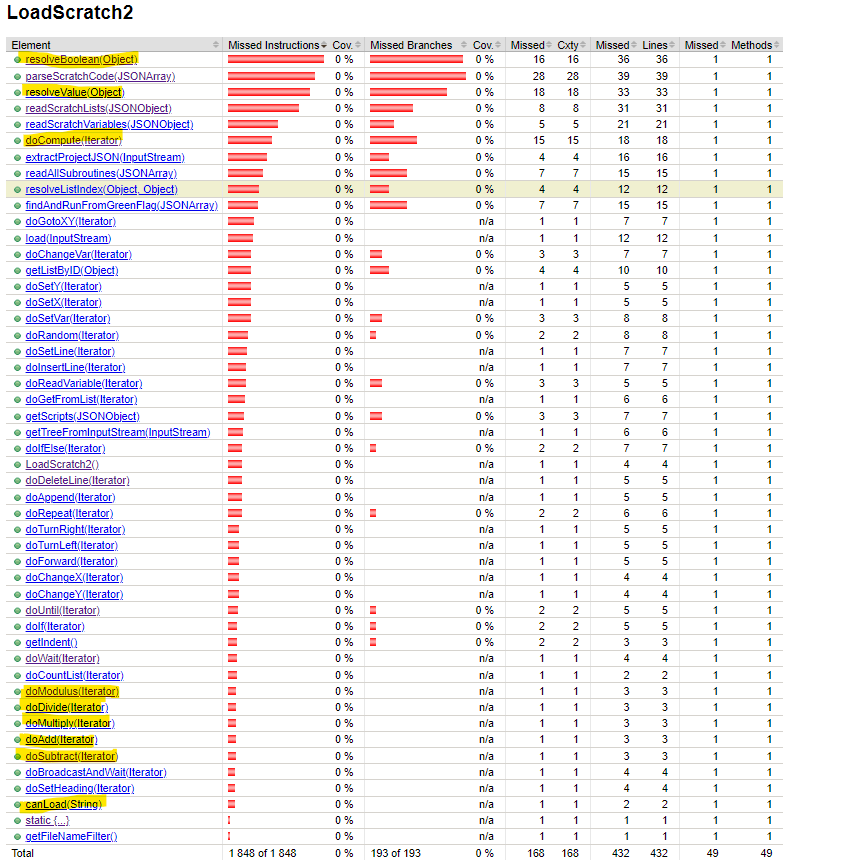
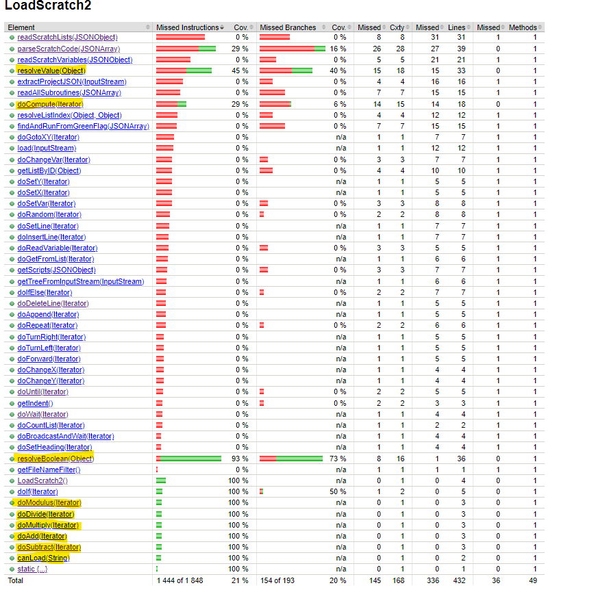
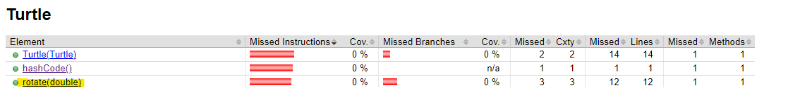

LoadScratch2Liens :
canLoad(String filename)Emplacement : Lignes 54-58 dans LoadScratch2.java
Description : Détermine si un fichier donné peut être chargé en vérifiant si son extension est .sb2.
Justification du Test : S'assure que seuls les fichiers Scratch 2 valides sont traités, évitant les erreurs lors du chargement.
Nom du test : testCanLoad()
resolveBoolean(Object obj)Emplacement : Lignes 224-256 dans LoadScratch2.java
Description : Évalue une expression booléenne, en gérant les opérations logiques telles que and, or, not, et les opérateurs de comparaison.
Justification du Test : Crucial pour interpréter les structures de contrôle, Garantit que les expressions booléennes sont évaluées correctement pour contrôler le flux du programme.
Noms des tests : (on a tester tout les cas possible)
testResolveBooleanGreaterThan()testResolveBooleanLessThan()testResolveBooleanEqual()testResolveBooleanNot()testResolveBooleanAnd()testResolveBooleanOr()testResolveBooleanParseError()resolveValue(Object obj)Emplacement : Lignes 258-364 dans LoadScratch2.java
Description : Résout un objet en une valeur numérique, en gérant les nombres, les chaînes, les variables et les expressions imbriquées.
Justification du Test : Méthode essentielle pour évaluer les expressions et récupérer les valeurs des variables. Vérifie la résolution correcte des différents types de valeurs.
Noms des tests :
testResolveValueWithStringNumber()testResolveValueWithNumber()testResolveValueWithJSONArray()doCompute(Iterator<?> scriptIter)Emplacement : Lignes 368-404 dans LoadScratch2.java
Description : Effectue des calculs mathématiques (par exemple, racine carrée, fonctions trigonométriques) basés sur un nom d'opération donné et un opérande.
Justification du Test : Essentiel pour évaluer les fonctions mathématiques au sein des projets Scratch. Assure que les calculs mathématiques variés sont effectués avec précision.
Nom du test : testDoCompute()
doAdd(Iterator<?> scriptIter)Emplacement : Lignes 428-432 dans LoadScratch2.java
Description : Effectue l'addition entre deux nombres
Justification du Test : Vérifie le bon fonctionnement de l'opération d'addition, essentielle pour évaluer les expressions Scratch.
Nom du test : testDoAdd()
doSubtract(Iterator<?> scriptIter)Emplacement : Lignes 434-438 dans LoadScratch2.java
Description : Effectue la soustraction entre deux nombres
Justification du Test : Vérifie le bon fonctionnement de l'opération de soustraction, cruciale pour traiter les scripts Scratch.
Nom du test : testDoSubtract()
doMultiply(Iterator<?> scriptIter)Emplacement : Lignes 420-424 dans LoadScratch2.java
Description : Multiplie deux nombres
Justification du Test : Assure la précision des opérations de multiplication dans l'interprétation des scripts Scratch.
Nom du test : testDoMultiply()
doDivide(Iterator<?> scriptIter)Emplacement : Lignes 414-418 dans LoadScratch2.java
Description : Divise un nombre par un autre.
Justification du Test : Vérifie que les divisions, y compris les cas particuliers comme la division par zéro, sont traitées correctement.
Nom du test : testDoDivide()
doModulus(Iterator<?> scriptIter)Emplacement : Lignes 406-412 dans LoadScratch2.java
Description : Calcule le reste de la division de deux nombres.
Justification du Test : Vérifie la mise en œuvre correcte de l'opération de modulo, utilisée dans de nombreux algorithmes.
Nom du test : testDoModulus()
Avant l'ajout des tests/p> 
Après l'ajout des tests
TurtleLiens :
rotate(double degrees)Emplacement : Lignes 204-214 dans Turtle.java
Description : Applique une rotation de l'angle spécifié à l'ensemble des mouvements enregistrés par la tortue.
Justification du Test : Essentiel pour les transformations géométriques des tracés de la tortue. Vérifie que les coordonnées sont correctement transformées après la rotation.
Nom du test : testRotate()
Avant l'ajout du test
Après l'ajout du test